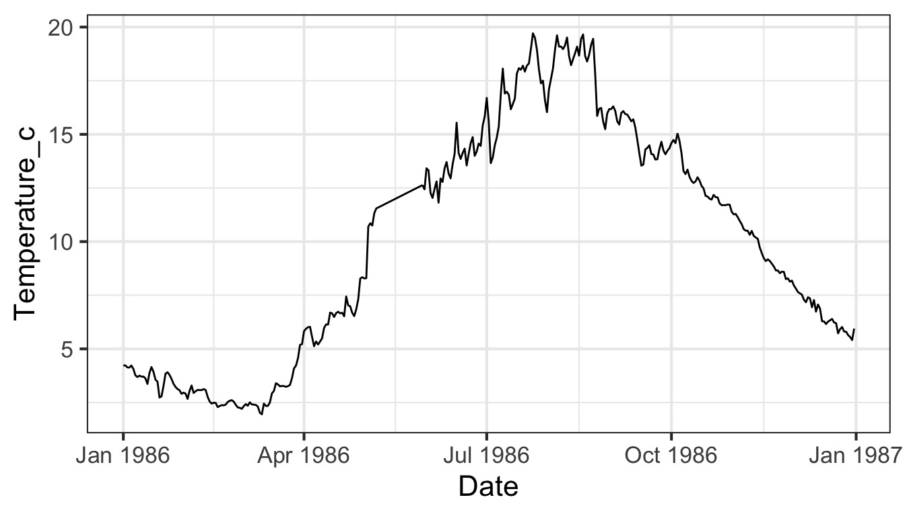
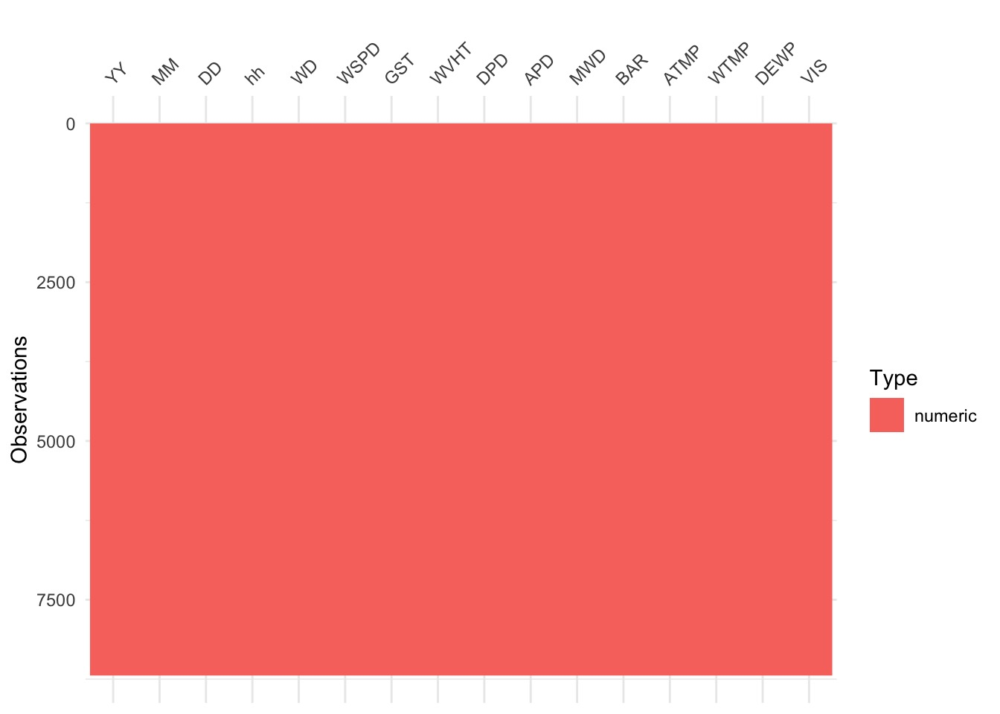

Writing Reusable Code with Functions

Let’s Say You Have This…

You Want To…

But There Are Problems - Changing Year Formats and names
# A tibble: 6 × 16
YY MM DD hh WD WSPD GST WVHT DPD APD MWD BAR ATMP
<dbl> <dbl> <dbl> <dbl> <dbl> <dbl> <dbl> <dbl> <dbl> <dbl> <dbl> <dbl> <dbl>
1 86 1 1 0 210 9 11 99 99 99 999 1009. 5.8
2 86 1 1 1 210 9 10 99 99 99 999 1009. 4.7
3 86 1 1 2 220 8 10 99 99 99 999 1009. 4
4 86 1 1 3 220 6 8 99 99 99 999 1009. 3.9
5 86 1 1 4 210 6 8 99 99 99 999 1009 3.9
6 86 1 1 5 210 6 8 99 99 99 999 1008. 3.9
# ℹ 3 more variables: WTMP <dbl>, DEWP <dbl>, VIS <dbl># A tibble: 6 × 16
YYYY MM DD hh WD WSPD GST WVHT DPD APD MWD BAR ATMP
<dbl> <dbl> <dbl> <dbl> <dbl> <dbl> <dbl> <dbl> <dbl> <dbl> <dbl> <dbl> <dbl>
1 1999 1 1 0 221 5.4 7.2 0.33 11.1 5.25 999 1017. -4.3
2 1999 1 1 1 218 5.6 7.3 0.31 11.1 5.51 999 1016. -4
3 1999 1 1 2 226 5.7 7 0.32 12.5 6.53 999 1016. -3.9
4 1999 1 1 3 228 5.7 7.3 0.31 11.1 6.17 999 1015. -3.9
5 1999 1 1 4 237 5.9 7.7 0.39 11.1 5.02 999 1015 -3.8
6 1999 1 1 5 235 5.7 7.5 0.42 11.1 4.81 999 1015. -3.9
# ℹ 3 more variables: WTMP <dbl>, DEWP <dbl>, VIS <dbl>Worse… nonnumeric row cruft
# A tibble: 6 × 18
X.YY MM DD hh mm WDIR WSPD GST WVHT DPD APD MWD PRES
<chr> <chr> <chr> <chr> <chr> <chr> <chr> <chr> <chr> <chr> <chr> <chr> <chr>
1 #yr mo dy hr mn degT m/s m/s m sec sec degT hPa
2 2012 06 30 23 50 253 3.4 4.2 0.52 9.09 5.33 86 1005.4
3 2012 07 01 00 50 198 3.5 4.1 0.53 7.69 5.41 107 1005.7
4 2012 07 01 01 50 199 4.0 4.7 0.48 10.00 5.60 102 1006.1
5 2012 07 01 02 50 218 3.9 4.4 0.45 9.09 5.20 87 1006.1
6 2012 07 01 03 50 222 4.5 4.8 0.41 7.69 4.68 100 1006.5
# ℹ 5 more variables: ATMP <chr>, WTMP <chr>, DEWP <chr>, VIS <chr>, TIDE <chr>Solutions?
Solutions
- Write code for each individual file
- Lots of copy-paste
- Write code that row-binds all data and clean from there
- Only good once - what about next year?
- FUNCTIONS!
What is our Philosophy?
“You should consider writing a function whenever you’ve copied
and pasted a block of code more than twice”
- H. Wickham
Let’s Find the Problems!
Problems with Buoys - Each one (or two) is a function!
NA characters vary (99, 999).
Need to eliminate rows with
#yr& turn cols numericNames for year are nonstandard
- X.YY, YY, and YYYY
Some years are listed with only two digits
- Typically, but maybe not always, less than 1999
Col names are abbreviations - make it readable!
Is hourly really a good idea?
Where to Start?!
Every problem is an opportunity for a function.
With every problem, identify what you want to input as an argument, and what you want as an output.
Don’t make one function do too much! You can always chain together many functions
To start - reading in a buoy file
Let’s just write a function that will read in any of the buoys and return a nice data frame.
Let’s call it
read_buoy.But before we start….
How do I build a function?
- OK, what’s normally going to change
- The year!
- BUT - what could change under some circumstances?
- buoy number, directory, separator.
- let’s leave that for later and just
- Identify what could differ between files for just
loading
- Don’t try and do too much at once!
- Write some test code to load in one buoy NOT in a function to start
Test Code: Copy these comments and write code!
Test Code Example
# define a year
a_year <- 2013
# make a filename (could use paste0 instead of str_c)
# or glue::glue()
buoy_file <- str_c("lectures/data/buoydata/44013_", a_year, ".csv")
# read in a file
read_csv(buoy_file)# A tibble: 8,210 × 18
X.YY MM DD hh mm WDIR WSPD GST WVHT DPD APD MWD PRES
<chr> <chr> <chr> <chr> <chr> <chr> <chr> <chr> <chr> <chr> <chr> <chr> <chr>
1 #yr mo dy hr mn degT m/s m/s m sec sec degT hPa
2 2012 12 31 23 50 234 8.5 10.2 0.42 3.33 3.14 279 1011…
3 2013 01 01 00 50 246 9.0 10.9 0.52 2.86 2.94 251 1010…
4 2013 01 01 01 50 243 7.3 9.4 0.50 3.33 3.05 237 1010…
5 2013 01 01 02 50 252 10.5 12.4 0.50 3.03 2.99 244 1009…
6 2013 01 01 03 50 256 10.9 13.0 0.65 3.70 3.28 265 1008…
7 2013 01 01 04 50 254 11.6 13.2 0.72 3.70 3.33 255 1007…
8 2013 01 01 05 50 244 10.8 12.7 0.84 4.00 3.54 260 1006…
9 2013 01 01 06 50 241 10.5 12.4 0.74 3.85 3.34 259 1006…
10 2013 01 01 07 50 237 9.7 11.9 0.67 3.70 3.17 257 1006…
# ℹ 8,200 more rows
# ℹ 5 more variables: ATMP <chr>, WTMP <chr>, DEWP <chr>, VIS <chr>, TIDE <chr>Unit Testing
Take the smallest piece of code in an application, and make a test to ensure if works properly
Unit test for 1993 - OK on type

Unit test for 1993 - bad on range!
YY MM DD hh WD
Min. :93 Min. : 1.000 Min. : 1.00 Min. : 0.0 Min. : 0.0
1st Qu.:93 1st Qu.: 4.000 1st Qu.: 8.00 1st Qu.: 5.0 1st Qu.:124.0
Median :93 Median : 7.000 Median :16.00 Median :11.0 Median :209.0
Mean :93 Mean : 6.538 Mean :15.72 Mean :11.5 Mean :195.3
3rd Qu.:93 3rd Qu.:10.000 3rd Qu.:23.00 3rd Qu.:18.0 3rd Qu.:278.0
Max. :93 Max. :12.000 Max. :31.00 Max. :23.0 Max. :999.0
WSPD GST WVHT DPD
Min. : 0.000 Min. : 0.000 Min. : 0.000 Min. : 0.000
1st Qu.: 4.000 1st Qu.: 4.700 1st Qu.: 0.400 1st Qu.: 5.900
Median : 5.900 Median : 7.000 Median : 0.600 Median : 8.300
Mean : 6.382 Mean : 8.138 Mean : 2.247 Mean : 9.351
3rd Qu.: 8.200 3rd Qu.:10.000 3rd Qu.: 1.000 3rd Qu.:10.000
Max. :99.000 Max. :99.000 Max. :99.000 Max. :99.000
APD MWD BAR ATMP
Min. : 0.000 Min. : 0 Min. : 964.6 Min. :-14.00
1st Qu.: 4.500 1st Qu.:999 1st Qu.:1010.7 1st Qu.: 2.80
Median : 5.600 Median :999 Median :1016.4 Median : 9.50
Mean : 7.042 Mean :792 Mean :1035.0 Mean : 10.58
3rd Qu.: 6.800 3rd Qu.:999 3rd Qu.:1022.5 3rd Qu.: 16.50
Max. :99.000 Max. :999 Max. :9999.0 Max. :999.00
WTMP DEWP VIS
Min. : 0.80 Min. :999 Min. : 0.00
1st Qu.: 4.00 1st Qu.:999 1st Qu.:99.00
Median : 9.50 Median :999 Median :99.00
Mean : 11.67 Mean :999 Mean :78.51
3rd Qu.: 14.10 3rd Qu.:999 3rd Qu.:99.00
Max. :999.00 Max. :999 Max. :99.00 More testing with Small Changes - YES!
YY MM DD hh WD
Min. :93 Min. : 1.000 Min. : 1.00 Min. : 0.0 Min. : 0.0
1st Qu.:93 1st Qu.: 4.000 1st Qu.: 8.00 1st Qu.: 5.0 1st Qu.:124.0
Median :93 Median : 7.000 Median :16.00 Median :11.0 Median :209.0
Mean :93 Mean : 6.538 Mean :15.72 Mean :11.5 Mean :195.1
3rd Qu.:93 3rd Qu.:10.000 3rd Qu.:23.00 3rd Qu.:18.0 3rd Qu.:278.0
Max. :93 Max. :12.000 Max. :31.00 Max. :23.0 Max. :360.0
NA's :20
WSPD GST WVHT DPD
Min. : 0.00 Min. : 0.000 Min. :0.0000 Min. : 0.000
1st Qu.: 4.00 1st Qu.: 4.700 1st Qu.:0.4000 1st Qu.: 5.900
Median : 5.90 Median : 7.000 Median :0.6000 Median : 8.300
Mean : 6.34 Mean : 7.739 Mean :0.8358 Mean : 8.043
3rd Qu.: 8.20 3rd Qu.: 9.900 3rd Qu.:1.0000 3rd Qu.:10.000
Max. :25.70 Max. :32.400 Max. :6.1000 Max. :16.700
NA's :4 NA's :38 NA's :125 NA's :125
APD MWD BAR ATMP
Min. : 0.0 Min. : 0.0 Min. : 964.6 Min. :-14.000
1st Qu.: 4.5 1st Qu.: 73.0 1st Qu.:1010.6 1st Qu.: 2.800
Median : 5.6 Median : 91.0 Median :1016.4 Median : 9.500
Mean : 5.7 Mean :117.6 Mean :1016.4 Mean : 9.211
3rd Qu.: 6.7 3rd Qu.:111.0 3rd Qu.:1022.4 3rd Qu.: 16.500
Max. :11.8 Max. :358.0 Max. :1044.5 Max. : 31.900
NA's :125 NA's :6677 NA's :20 NA's :12
WTMP DEWP VIS
Min. : 0.800 Mode:logical Min. : 0.00
1st Qu.: 4.000 NA's:8693 1st Qu.: 7.30
Median : 9.400 Median : 9.10
Mean : 9.503 Mean :11.74
3rd Qu.:14.100 3rd Qu.:11.00
Max. :22.000 Max. :35.80
NA's :19 NA's :6652 Make this a Function by making a_year an argument and adding a return!
#define a year
a_year <- 2013
#make a filename
buoy_file <- str_c("lectures/data/buoydata/44013_", a_year, ".csv")
# read in a file
read_csv(buoy_file, na = c("99", "999", "9999"))Also, get a little fancier and add a buoy_number and
buoy_dir argument with sensible defaults - you’ve got
this!
One Reading Function
Problems with Buoys - Each one (or two) is a function!
NA characters vary (99, 999).Need to eliminate rows with
#yr& turn cols numericNames for year are nonstandard
- X.YY, YY, and YYYY
Some years are listed with only two digits
- Typically, but maybe not always, less than 1999
Col names are abbreviations - make it readable!
Is hourly really a good idea?
Problem 2: Extra Rows and Characters
# A tibble: 6 × 18
X.YY MM DD hh mm WDIR WSPD GST WVHT DPD APD MWD PRES
<chr> <chr> <chr> <chr> <chr> <chr> <chr> <chr> <chr> <chr> <chr> <chr> <chr>
1 #yr mo dy hr mn degT m/s m/s m sec sec degT hPa
2 2012 12 31 23 50 234 8.5 10.2 0.42 3.33 3.14 279 1011.6
3 2013 01 01 00 50 246 9.0 10.9 0.52 2.86 2.94 251 1010.8
4 2013 01 01 01 50 243 7.3 9.4 0.50 3.33 3.05 237 1010.0
5 2013 01 01 02 50 252 10.5 12.4 0.50 3.03 2.99 244 1009.0
6 2013 01 01 03 50 256 10.9 13.0 0.65 3.70 3.28 265 1008.1
# ℹ 5 more variables: ATMP <chr>, WTMP <chr>, DEWP <chr>, VIS <chr>, TIDE <chr>Fix it with a function!
Work with a partner and write a function that will strip non-numeric rows from a buoy data frame and turn character cols numeric
Start with a single test case, and apply unit tests.
- hint:
mutate(across(.cols = everything(), .fns = as.numeric))
- hint: what is the same and what is different across files?
- hint:
Once it works broadly, turn it into a function so that we can…
My test code outline (there are many solutions)
Alternate Solution if we Don’t Care About NAs
My test code
# get some buoy data
dat <- read_buoy(2013)
# Turn everything numeric, as then some rows will be all NA
dat <- dat |>
mutate(across(.cols = everything(),
.fns = as.numeric))
# Remove rows where month is NA, as the year col name changes
dat <- dat |>
filter(!is.na(MM))
# TESTS
visdat::vis_dat(dat)
summary(dat)Turn it into a function
Does It Blend?
# A tibble: 6 × 18
X.YY MM DD hh mm WDIR WSPD GST WVHT DPD APD MWD PRES
<dbl> <dbl> <dbl> <dbl> <dbl> <dbl> <dbl> <dbl> <dbl> <dbl> <dbl> <dbl> <dbl>
1 2012 12 31 23 50 234 8.5 10.2 0.42 3.33 3.14 279 1012.
2 2013 1 1 0 50 246 9 10.9 0.52 2.86 2.94 251 1011.
3 2013 1 1 1 50 243 7.3 9.4 0.5 3.33 3.05 237 1010
4 2013 1 1 2 50 252 10.5 12.4 0.5 3.03 2.99 244 1009
5 2013 1 1 3 50 256 10.9 13 0.65 3.7 3.28 265 1008.
6 2013 1 1 4 50 254 11.6 13.2 0.72 3.7 3.33 255 1007.
# ℹ 5 more variables: ATMP <dbl>, WTMP <dbl>, DEWP <dbl>, VIS <dbl>, TIDE <dbl>Problems with Buoys - Each one (or two) is a function!
NA characters vary (99, 999).Need to eliminate rows with#yr& turn cols numericNames for year are nonstandard
- X.YY, YY, and YYYY
Some years are listed with only two digits
- Typically, but maybe not always, less than 1999
Col names are abbreviations - make it readable!
Is hourly really a good idea?
That Year Problem
# A tibble: 6 × 16
YY MM DD hh WD WSPD GST WVHT DPD APD MWD BAR ATMP
<dbl> <dbl> <dbl> <dbl> <dbl> <dbl> <dbl> <dbl> <dbl> <dbl> <dbl> <dbl> <dbl>
1 86 1 1 0 210 9 11 NA NA NA NA 1009. 5.8
2 86 1 1 1 210 9 10 NA NA NA NA 1009. 4.7
3 86 1 1 2 220 8 10 NA NA NA NA 1009. 4
4 86 1 1 3 220 6 8 NA NA NA NA 1009. 3.9
5 86 1 1 4 210 6 8 NA NA NA NA 1009 3.9
6 86 1 1 5 210 6 8 NA NA NA NA 1008. 3.9
# ℹ 3 more variables: WTMP <dbl>, DEWP <dbl>, VIS <dbl># A tibble: 6 × 16
YYYY MM DD hh WD WSPD GST WVHT DPD APD MWD BAR ATMP
<dbl> <dbl> <dbl> <dbl> <dbl> <dbl> <dbl> <dbl> <dbl> <dbl> <dbl> <dbl> <dbl>
1 1999 1 1 0 221 5.4 7.2 0.33 11.1 5.25 NA 1017. -4.3
2 1999 1 1 1 218 5.6 7.3 0.31 11.1 5.51 NA 1016. -4
3 1999 1 1 2 226 5.7 7 0.32 12.5 6.53 NA 1016. -3.9
4 1999 1 1 3 228 5.7 7.3 0.31 11.1 6.17 NA 1015. -3.9
5 1999 1 1 4 237 5.9 7.7 0.39 11.1 5.02 NA 1015 -3.8
6 1999 1 1 5 235 5.7 7.5 0.42 11.1 4.81 NA 1015. -3.9
# ℹ 3 more variables: WTMP <dbl>, DEWP <dbl>, VIS <dbl>That Year Problem
# A tibble: 6 × 16
YY MM DD hh WD WSPD GST WVHT DPD APD MWD BAR ATMP
<dbl> <dbl> <dbl> <dbl> <dbl> <dbl> <dbl> <dbl> <dbl> <dbl> <dbl> <dbl> <dbl>
1 86 1 1 0 210 9 11 NA NA NA NA 1009. 5.8
2 86 1 1 1 210 9 10 NA NA NA NA 1009. 4.7
3 86 1 1 2 220 8 10 NA NA NA NA 1009. 4
4 86 1 1 3 220 6 8 NA NA NA NA 1009. 3.9
5 86 1 1 4 210 6 8 NA NA NA NA 1009 3.9
6 86 1 1 5 210 6 8 NA NA NA NA 1008. 3.9
# ℹ 3 more variables: WTMP <dbl>, DEWP <dbl>, VIS <dbl># A tibble: 6 × 18
X.YY MM DD hh mm WDIR WSPD GST WVHT DPD APD MWD PRES
<dbl> <dbl> <dbl> <dbl> <dbl> <dbl> <dbl> <dbl> <dbl> <dbl> <dbl> <dbl> <dbl>
1 2012 6 30 23 50 253 3.4 4.2 0.52 9.09 5.33 86 1005.
2 2012 7 1 0 50 198 3.5 4.1 0.53 7.69 5.41 107 1006.
3 2012 7 1 1 50 199 4 4.7 0.48 10 5.6 102 1006.
4 2012 7 1 2 50 218 3.9 4.4 0.45 9.09 5.2 87 1006.
5 2012 7 1 3 50 222 4.5 4.8 0.41 7.69 4.68 100 1006.
6 2012 7 1 4 50 231 3.4 3.8 0.4 9.09 5.24 82 1006.
# ℹ 5 more variables: ATMP <dbl>, WTMP <dbl>, DEWP <dbl>, VIS <dbl>, TIDE <dbl>Fix two problems with 1 function!
Work with a partner and write a function that will:
- make the year column always be YYYY
- make the year column be a 4 digit year (e.g. 98 = 1998)
- hint: this is a good order to solve in
- hint: regexp withnames()orrename_with()are helpfulTest & once it works broadly, turn it into a function so that we can…
My test code
My alternate code
# get buoy data
dat <- read_buoy(1986)|> fix_bad_buoy_rows()
# use regexp to fix year column name
names(dat) <- str_replace( names(dat),
pattern = "X\\.YY",
replace = "YYYY")
names(dat) <- str_replace( names(dat),
pattern = "^YY$",
replace = "YYYY")
# if a year is < 100, add 1900 to it
dat <- dat |>
mutate(YYYY = ifelse(YYYY < 100, YYYY+1900, YYYY))
# TEST
range(dat$YYYY)Make it into a function
Does It Blend?
Does It Blend?
Problems with Buoys - Each one (or two) is a function!
NA characters vary (99, 999).Need to eliminate rows with#yr& turn cols numericNames for year are nonstandardX.YY, YY, and YYYY
Some years are listed with only two digitsTypically, but maybe not always, less than 1999
Col names are abbreviations - make it readable!
Is hourly really a good idea?
Before We Move Forward…
What is this?
Year can still change - it’s almost like we have another function in the making composed of modules…. this is….
Modular Programming

Wait, what is this modular madness?
Our code is composed of modular pieces
This means each modular function can be used in other contexts
- Enhances code flexibility and future reuse
It also means it is easier to find where our code has gone wrong
- Easier to test and debug
AND - we don’t get lost writing one honking single function
From Pipelines to Wrapper Function
A Cleaner Wrapper
Backwards Approach to Writing Modular Code
Analyze the steps of your task.
Break it down into pieces.
Write one function per piece.
Chain pieces together in a pipeline.
Turn pipeline into a wrapper function!
Or - Thinking Forwards for Writing Modular Code
Start with a wrapper
- Write out the steps of what you want to do in comments
- Pair those with functions using “snake case”
clean_data
- Use
|>for efficiency/readability!
- Write out the steps of what you want to do in comments
Write the subfunctions
- Repeat the toplevel comments anf functions
Continue until you have the lowest level atomized functions
Test THOSE functions. Then test up the chain….
Why do this
Reusable modules in other context.
Can unit test elements of the wrapper function
Easier to debug!
Can solve problems forwards or backwards!
Reality Check
Yes, sometimes you will write long functions - as long
as they are simple and readable, meh
Final Exercises - do 1, and then make wrappers in 2 and 3 with MINIMAL effort
Write a function that will get daily summaries of wave height and temperature only
- Make the returned column names for all values nice and
readable
- use
paste()andas.Date()to make a Date column after summarize
- Make the returned column names for all values nice and
readable
Do the same, but monthly…
Do the same, but anually….